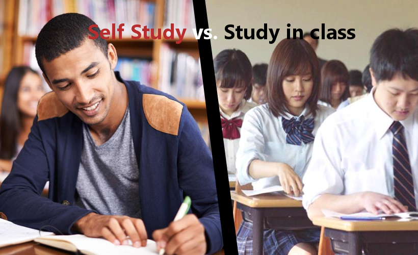

What is HOMESCHOOLING?
Study at home

If you are a homeschooling student, it means you don't need to go to school, you can just stay at home. But it is not means you don need to study, tyou still need to study by yourself.
Study on internet

For a homeschooling student, internet is a important way to let you learn. Internet is your teacher, you can get many knowedge from internet.
Study everywhere
Because you don't need to go to school, you can learn at everywhere, The ocean could be your teacher, and also you can learn at a football field!
Classroom V.S. selfstudy

Without learning at school, you can more free to use time, but you need to pay more time on allocate time, or you may waste a lot of time on other things.
Study with friend
Because you are not learning at school, so actually you may have noclassmate. But in Taiwan, there have many homeschooling student will study or learning together, just like they are classmate, and also they can be good friend.
You can be the master of...

Many of homeschooling student will choose to homeschooling is because they can spend more time on the subject they are interesting, and if they are not really interesting in some subject, they don't need to pay so muchh time on it.
You can do any job you want if you study hard enough

Homeschooling is not mean you don't like school so you can just be a student like that, but also, people often think the people who is a homeschooling student are very smart. But in fact, we are just a normal people, but if we work hard, also can be good at anything.
Learn what you want ot learn

One of the pros of homeschooling is that you can learn many subiect what you want to learn, and if you really don't want to learn something, you can just skip it.
You need to blance on study and play by yourself

Play video games are improtant, too. But when you enjoy in the game, don't forget to pay attetion on time! Happy time always flies,
People from govment will check what you learn

Because you don't need to go to school, so you also don't need to have exam. That means you don't have report cards too! Because of that, the people from govment will ask you to report what you done in a year, and also check your learning.